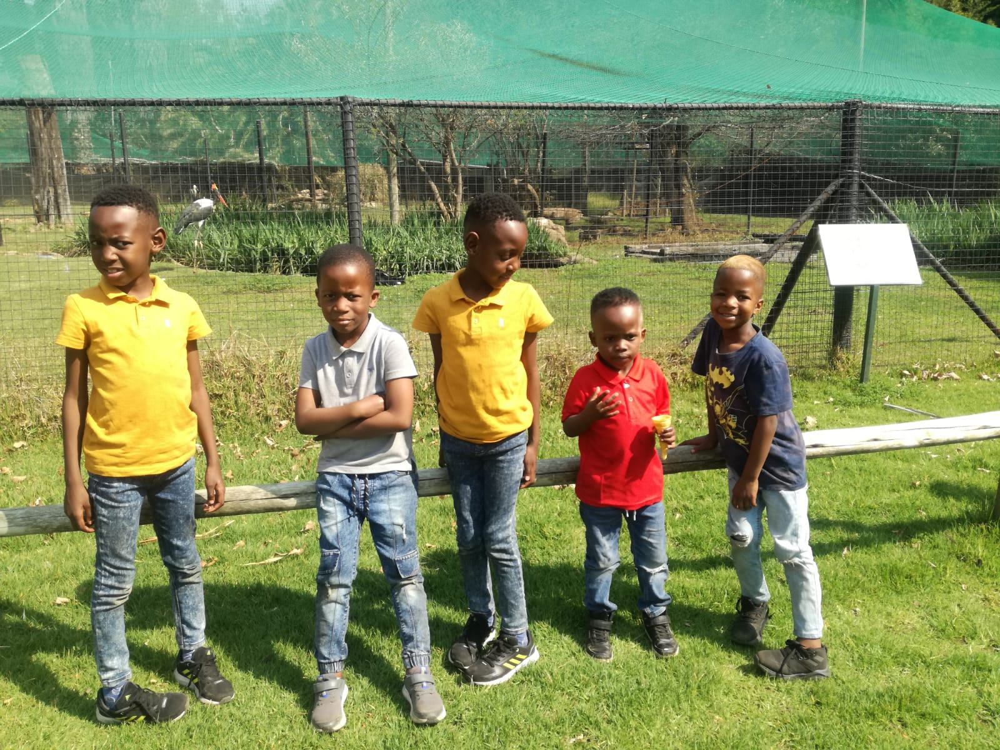
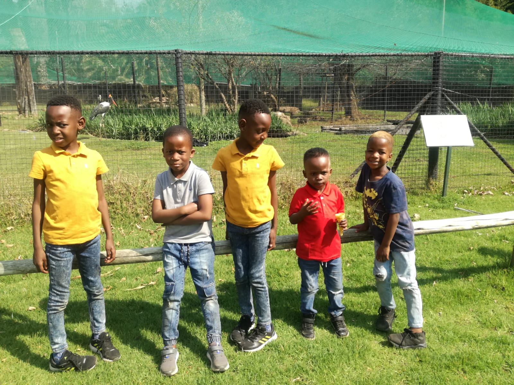

At Stepping Stone day and aftercare nursery school, we pride ourselves in providing a safe, fun accademically
rich environment that promotes social emotional cognitive and physical growth. We aim to engage our children in
high quality learning expriences to maximise their holistic development. We envision developing future generations of
leaders who approach their life challenges with resiliency and independence.
Stepping Stone nursery school has a staff of creative knowledgeable individuals from diverse back-grounds who
are phenomenal. Our passionate and devoted team of Educators and Childcare personnel create a safe, caring and
respectful learning environment which encourages the holistic development of our children.

The safety and well being of our children is paramount to us at Stepping Stone Nursery School because we understand
the incredible trust you are placing in us.

We provide nutritious meals which includes the option of breakfast from morning till mid morning snack and lunch.
Our meals are freshly prepared daily by our professional chef on our premises and teachers also participate in the
consumption of the food prepared. Our Menu is on display on our notice board for all to view. All dietery requirements
are catered for. Vegiterian meals are also available on request.

Our unique and creative Thermatic Based Curiculum focuses on and intergrates different areas of play and cognitive developement
our Childhood Sensory Activities and Science Lessons and create a solid foundation for higher learning.

We follow the 4 school terms model in time with most schools in the area. We offer a Holiday program during school terms holidays at no additional cost. Where Children are situated with fun activities and enjoy a break from school curriculum. NB: The school closes on public holidays and over the December Holiday Period.
Stepping Stone Nursery School will work with you the parent to make your baby's transition a smoothand happy time by creating a warm naturing interaction with all babies in and out care. We provide personalised care for each baby based on your baby's unique needs, nutritional guidelines and any special attention required. Through our low ratios, in the warm setting of each baby room in our Nursery; daily age appropriate stimulation is provided as help for your infant to reach his/her developmental milestones.
This age group enjoys activities that are build around our toddlers limitless curiosity as we encourage their natural desire to explore through a range of indoor fun like arts, music, movement, sensory activities and outside gross motor play. Our toddlers days are packed with fun learning experiences that enhance their development.
Stepping Stone Nursing School has developed a unique and creative thematic based curriculum which is diverse and focuses on intergrating different areas of play and cognitive development. Our early childhood foundation program, specially devised sensory activities and science lessons create a solid foundation for higher learning. Our teachers observe our children and evaluate their learning experiences throughout the year to collect information on their developmental milestone which is continually monitored on an individualised basis through the use of regular assessments and formal reports that are communicated with Parents at the end of term two and term four.
As the owner and Director fo Stepping Stone Nusery School, I aspire to establish a joy of learning and fun of Childhood exploration in a dynamic, stimulation and happy atmosphere. I have an infinite passion to mould young minds and I recognise remarkable expansion of development that occures from birth to five years. Working with Children has always been my greatest passion apart from studying Early Childhood Development Education. I have broadened my scope of knowledge in Childhood Development through studying Development. Through my knowledge and field of study i have implemented a Curriculum for our school that focuses on Stimulating each child's inner craving for knowledge by introducing age while placing emphasis on having fun while learning.
Events & Birthdays CelebratedOur kids and Teachers took a trip to Johannesburg Zoo to see and learn about wild and domestic animals. It was a very pleasant and exciting
day for our pupils who were excited to seelive animals for the first time. Once again we thank you parents for this wanderful support.
 
